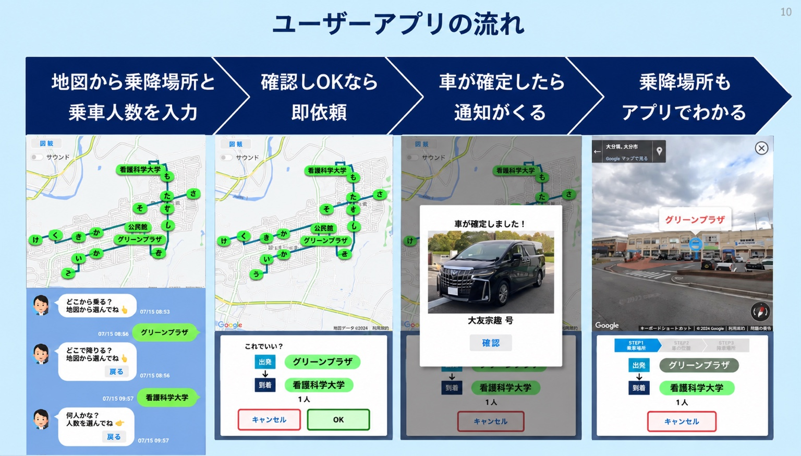
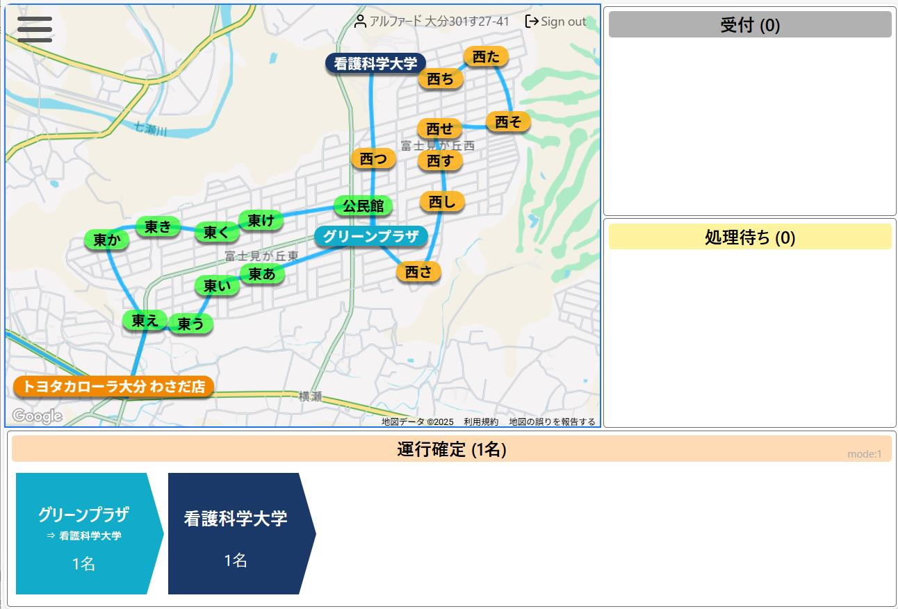
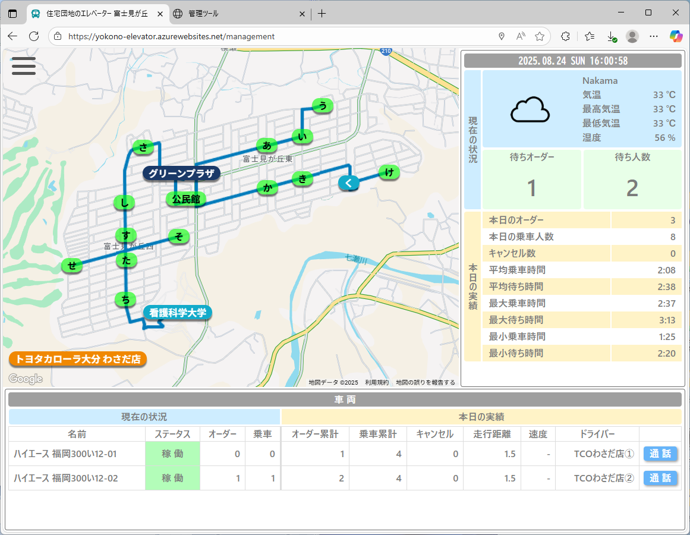

{kind=link}
SUMMARY
要約版 4ページ
サービスの全体像と、ユーザー・ドライバー・管理者の役割を短時間で理解。
MOBILITY / FUJIMIGAOKA, OITA
その一歩を、もっと気軽に。
買い物や地域の集まりへ。必要なときに呼び出して、決められた乗降場所の間を移動する、地域の乗合サービスです。
大分実証：試乗車のアルファードで、地元住民を送迎。
CATALOG / 2 EDITIONS
どちらもWebで読めて、PDFで共有・印刷できます。
SUMMARY
サービスの全体像と、ユーザー・ドライバー・管理者の役割を短時間で理解。
DETAIL
3者それぞれの操作・確認事項・困ったときの対応を、各4ページで紹介。
01 / 4 PAGES
呼び出しから乗車まで。実画面の操作手順、便利な使い方、困ったときの確認。
02 / 4 PAGES
運行前の準備、呼び出しの引き受け、到着・降車、満車や不在への対応。
03 / 4 PAGES
待ち状況と車両の確認、日報・月報の出力、データと現場の声による改善。
01 / USER EXPERIENCE
地域の案内するLINEなどから利用画面を開き、次の順番で進みます。
地図で乗る場所、降りる場所を選び、一緒に乗る人数を入力します。
出発・到着・人数を確認。正しければ「OK」を押します。
「車が確定しました！」の通知で、迎えの車の写真・車両名を確認します。
周辺の建物や目印を確かめ、指定した乗降場所で待ちます。
画面の地名・車種・ボタンは資料提供時の例です。初回登録、運行日・時間、料金、利用条件は地域の案内をご確認ください。
02 / SERVICE & OPERATION
DRIVER / ドライバー
準備してログイン → 呼び出しを引き受ける → 到着を知らせ、乗車を確認 → 降車を確認して完了。

ADMIN / 管理者
待ち人数・車両位置・対応状況を確認。日報・月報で振り返り、現場の声と合わせて次の運行を改善します。

03 / FUJIMIGAOKA PILOT
大分市・富士見ヶ丘団地での「団地のエレベーター」の導入事例。大分の実証では、トヨタカローラ大分の試乗車（アルファード）を活用し、地元住民を送迎しました。住民との対話から、乗降場所の調整、アプリ、運行、実証と改善までをつなぎました。
WORK WITH MOBILITY DESIGN LAB
移動の課題を捉え、乗降場所・運行を設計し、アプリを現場で試す。MDLは、導入から実証・改善まで伴走します。
{kind=link}
{kind=link}